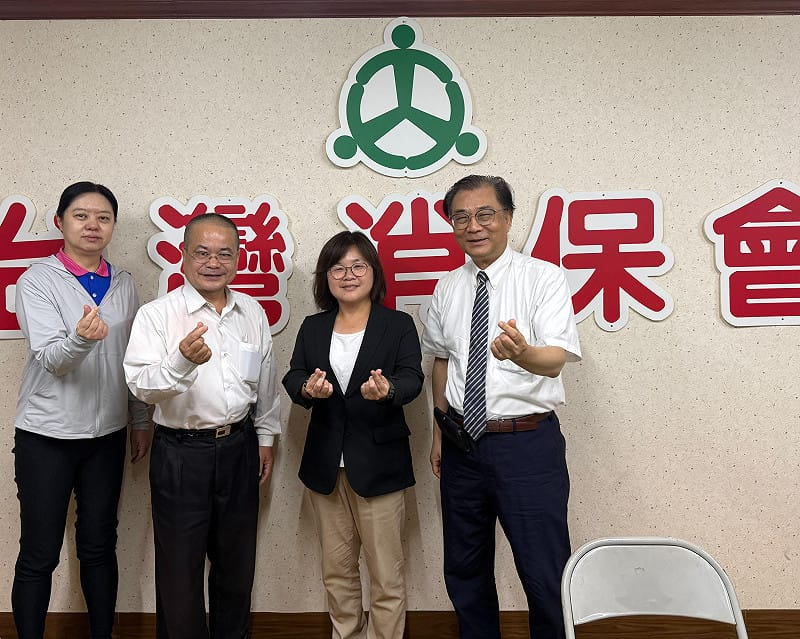

背景與說明
許多熱愛毛小孩的毛爸毛媽購買號稱合法便捷的「毛動力嘟嘟車」寵物電動車，滿心期待載著寵物出遊，交車後卻赫然發現該款車輛根本未通過法定車輛型式安全審驗，依法完全無法領牌或合法上路行駛。業者不僅推諉卸責，更拒絕全額退款，導致全台與高雄眾多消費者面臨求償無門、權益受損的重大困境。
陳慧文議員接獲眾多受害車主陳情後，立即召開記者會公開揭發業者不當行銷與履約瑕疵，並在市議會總質詢及委員會兩度提出正式提案，嚴正要求市府消保官與法制局全面啟動行政調查。陳慧文在質詢中強烈主張，市府必須主動跨局處建立消費救濟專案窗口，全力協助受害者保全證據，並督促業者承擔退款與損害賠償責任。
在陳慧文的強力監督與奔走協調下，成功促成高雄市政府消保官會同台灣消費者保護協會正式啟動團體訴訟收件機制，由專業律師團隊協助全體受害車主爭取法定賠償。陳慧文持續緊盯團訟進度與市府輔導措施，誓言成為弱勢消費者最堅實的後盾，督促政府落實消費市場源頭管理，嚴防類似消費陷阱再度發生。


推動歷程
重要進度
陪同受害消費者召開記者會
陳慧文陪同毛動力嘟嘟車受害車主召開記者會，揭露車輛無法合法上路事實，要求消保官介入調查。
議會總質詢要求市府積極查處
陳慧文於市政總質詢要求市府跨局處成立救濟管道，協助受害車主進行消費申訴、契約解除及損害求償。
議會正式提案促成救濟機制
陳慧文於市議會提出兩項正式提案，督促法制局與經發局強化消費警訊發布，並提供受害者司法訴訟後援。
消保協會啟動團體訴訟收件
在陳慧文協調督促下，促成台灣消費者保護協會正式展開團體訴訟收件作業，全力為受害車主爭取法律求償。